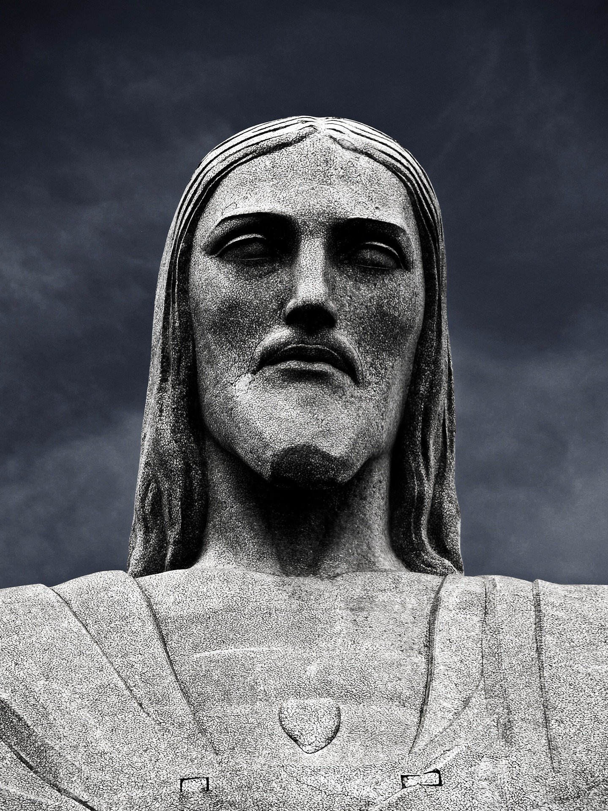

Le Christ Rédempteur (Cristo Redentor) est une statue monumentale située au sommet du mont Corcovado, à Rio de Janeiro, au Brésil. Inaugurée en 1931, elle mesure 38 mètres de haut (socle inclus) et est l’un des monuments les plus célèbres du monde. L’idée de construire une statue dédiée au Christ a émergé au début du 20ᵉ siècle pour symboliser la foi chrétienne et l’unité du peuple brésilien. Conçue par l’ingénieur brésilien Heitor da Silva Costa et sculptée par le Français Paul Landowski, la statue est faite de béton armé et recouverte de stéatite, une pierre résistante. Les bras ouverts du Christ, qui s’étendent sur 28 mètres, symbolisent l’accueil et la paix. En 2007, elle a été élue comme l’une des Sept Nouvelles Merveilles du Monde. Aujourd’hui, le Christ Rédempteur est un symbole universel de paix et une icône culturelle du Brésil.
Le Christ Rédempteur est l’un des monuments les plus célèbres au monde et un symbole du Brésil. Inscrit au patrimoine mondial de l’UNESCO, il incarne la paix, l’amour et l’accueil chaleureux du peuple brésilien.
Située au sommet du mont Corcovado, la statue offre une vue spectaculaire sur Rio de Janeiro : les plages de Copacabana et d’Ipanema, le Pain de Sucre, la forêt de Tijuca et même le stade Maracanã. C’est l’un des meilleurs points de vue pour admirer la ville.
